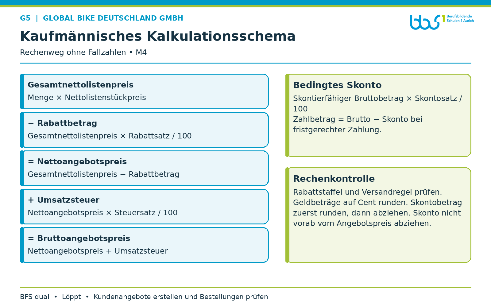

LS 2.4 · Global Bike
M4 – Preise und Konditionen ermitteln
Global Bike Deutschland GmbH | Fachinformation | ab Phase 1 | bedarfsorientiert nutzbar
1. Worum geht es?
Ein Händler benötigt nicht nur einen Preis pro Fahrrad oder Zubehörartikel. Er möchte wissen, welchen Gesamtbetrag er zahlen muss, wann die Zahlung fällig wird und wann die Ware geliefert werden kann. In der Auftragsbearbeitung von Global Bike müssen diese Informationen zusammenpassen. Ein falscher Rabatt kann den Erlös verringern; eine ungeprüfte Lieferzusage kann zu Problemen bei der Erfüllung führen.
Alle folgenden Beispiele sind unabhängige Unterrichtssimulationen mit Zubehörartikeln. Die Zahlen sind keine SAP-Preise oder betrieblichen Freigaben. Für den eigentlichen Verkaufsvorgang gilt ausschließlich M2.
2. Fachbegriffe
| Begriff | Bedeutung |
|---|---|
| Nettolistenstückpreis | Ausgangspreis eines Artikels ohne Umsatzsteuer und vor Rabatt |
| Gesamtnettolistenpreis | Menge mal Nettolistenstückpreis |
| Mengenrabatt | Preisnachlass abhängig von der Abnahmemenge |
| Rabattbetrag | Preisnachlass in Euro |
| Nettoangebotspreis | Gesamtpreis nach unbedingten Nachlässen, ohne Umsatzsteuer |
| Nettostückpreis nach Rabatt | Nettoangebotspreis geteilt durch Menge, sofern nur Warenpreis enthalten |
| Umsatzsteuer | Steuer, die beim steuerpflichtigen Verkauf zum Nettobetrag hinzukommt |
| Bruttoangebotspreis | Nettoangebotspreis zuzüglich Umsatzsteuer |
| Skonto | Bedingter Preisnachlass bei fristgerechter Zahlung |
| Zahlungsziel | Frist für Zahlung ohne Skontoabzug |
| Lieferbedingungen | Vereinbarungen über Lieferung, Frist und Versandkosten |
| Angebotsgültigkeit | Zeitraum, in dem ein befristeter Antrag angenommen werden kann |
3. Prozentrechnung als Werkzeug
Der Grundwert ist der Betrag, auf den sich ein Prozentsatz bezieht. Der Prozentwert ist der errechnete Teilbetrag. Beispielsweise sind 6 % von 350 EUR genau 21 EUR: 350 × 6 / 100 = 21. Auf dem Taschenrechner kann auch 350 × 0,06 eingegeben werden.
Ein Rabatt wird abgezogen. Umsatzsteuer wird hinzugerechnet. Der jeweilige Grundwert ist wichtig: Die Umsatzsteuer wird nach dem Rabatt auf den steuerpflichtigen Nettobetrag berechnet, nicht auf den ursprünglichen Listenwert. Skonto wird in unseren Beispielen auf den skontierfähigen Bruttobetrag berechnet.
4. Allgemeines Kalkulationsschema
- Menge × Nettolistenstückpreis = Gesamtnettolistenpreis.
- Gesamtnettolistenpreis × Rabattsatz / 100 = Rabattbetrag.
- Gesamtnettolistenpreis − Rabattbetrag = Nettoangebotspreis (bei kostenfreier Lieferung).
- Nettoangebotspreis × Umsatzsteuersatz / 100 = Umsatzsteuer.
- Nettoangebotspreis + Umsatzsteuer = Bruttoangebotspreis.
- Skontierfähiger Bruttobetrag × Skontosatz / 100 = möglicher Skontoabzug.
- Bruttoangebotspreis − Skontoabzug = möglicher Zahlbetrag bei fristgerechter Zahlung.
Der sechste und siebte Schritt verändern nicht den zunächst ausgewiesenen Bruttoangebotspreis. Versandkosten sind nach der jeweiligen Vereinbarung gesondert zu berücksichtigen.
Schaubild G5: Kaufmännisches Kalkulationsschema (in Moodle einbetten).
5. Beispiel A – vollständige Kalkulation
Global Bike kalkuliert acht Zubehörartikel zu je 125,00 EUR netto, 4 % Rabatt, 19 % Umsatzsteuer und 3 % Skonto innerhalb von sieben Tagen ab Rechnungsdatum, sonst 21 Tage ohne Abzug. Versandkosten trägt Global Bike.
| Schritt | Rechnung | Betrag |
|---|---|---|
| Listenwert | 8 × 125,00 | 1.000,00 EUR |
| Rabatt | 1.000,00 × 0,04 | 40,00 EUR |
| Nettoangebot | 1.000,00 − 40,00 | 960,00 EUR |
| Umsatzsteuer | 960,00 × 0,19 | 182,40 EUR |
| Bruttoangebot | 960,00 + 182,40 | 1.142,40 EUR |
| Mögliches Skonto | 1.142,40 × 0,03 | 34,27 EUR |
| Möglicher Zahlbetrag | 1.142,40 − 34,27 | 1.108,13 EUR |
Der Nettostückpreis nach Rabatt beträgt 960,00 / 8 = 120,00 EUR. Bei Zahlung nach Ablauf der Skontofrist, aber innerhalb des Zahlungsziels, sind 1.142,40 EUR zu zahlen. Die Skontonutzung ist freiwillig.
6. Beispiel B – Rabattstaffel richtig anwenden
Für einen unabhängigen Verkauf von Fahrradkörben gelten beispielhaft folgende Staffel und ein Nettolistenstückpreis von 32,00 EUR:
| Menge | Rabatt auf die gesamte Menge |
|---|---|
| 1–14 | 0 % |
| 15–39 | 6 % |
| ab 40 | 9 % |
Ein Händler fragt 18 Körbe an. Die mittlere Stufe gilt für alle 18 Stück, nicht nur für die Stücke oberhalb der Mengengrenze. Die Rabatte werden nicht addiert.
| Schritt | Rechnung | Betrag |
|---|---|---|
| Listenwert | 18 × 32,00 | 576,00 EUR |
| Rabatt | 576,00 × 0,06 | 34,56 EUR |
| Nettoangebot | 576,00 − 34,56 | 541,44 EUR |
| Nettostückpreis | 541,44 / 18 | 30,08 EUR |
| Umsatzsteuer | 541,44 × 0,19 | 102,87 EUR |
| Bruttoangebot | 541,44 + 102,87 | 644,31 EUR |
Versandkosten übernimmt Global Bike; kein Skonto vereinbart. Bei genau 40 Stück wäre die höchste Stufe erreicht. Bei anderen Staffelmodellen können Teilmengen unterschiedlich rabattiert werden. Maßgeblich ist immer die konkrete Freigabe. Eine größere Menge bedeutet nicht automatisch, dass sie lieferbar ist.
7. Beispiel C – Versandkosten und Rundung
Global Bike kalkuliert sieben Fahrradpflegeartikel zu je 19,95 EUR netto mit 5 % Rabatt auf die Ware. Zusätzlich sind 8,00 EUR netto Versandkosten vereinbart. Für dieses Beispiel gelten 19 % Umsatzsteuer auf Ware und Versand sowie 1,5 % Skonto auf den gesamten Bruttobetrag.
| Schritt | Rechnung | Betrag |
|---|---|---|
| Listenwert | 7 × 19,95 | 139,65 EUR |
| Rabatt | 139,65 × 0,05 = 6,9825 | 6,98 EUR |
| Warenwert netto | 139,65 − 6,98 | 132,67 EUR |
| Gesamt netto | 132,67 + 8,00 | 140,67 EUR |
| Umsatzsteuer | 140,67 × 0,19 = 26,7273 | 26,73 EUR |
| Brutto | 140,67 + 26,73 | 167,40 EUR |
| Skonto | 167,40 × 0,015 = 2,511 | 2,51 EUR |
| Zahlbetrag mit Skonto | 167,40 − 2,51 | 164,89 EUR |
Der rabattierte Warenstückpreis beträgt rechnerisch 132,67 / 7 = rund 18,95 EUR. Sieben gerundete Stückpreise ergeben 132,65 EUR. Die Differenz von zwei Cent entsteht durch Rundung. Nach der für diese Lernsituation festgelegten Gesamtbetragsmethode bleibt der nachvollziehbar ermittelte Gesamtwarenwert maßgeblich. Einen gerundeten Stückpreis als solchen kennzeichnen; bei echten Geschäftsdokumenten die betriebliche Rundungsregel beachten und Widersprüche klären.
8. Rabatt, Skonto und Rundung
Rabatt ist ein unbedingter Nachlass, der direkt in den Angebotspreis eingeht. Skonto ist bedingt. Wird Skonto tatsächlich genutzt, ändert sich auch die Umsatzsteuerbemessungsgrundlage; die buchhalterische Behandlung wird hier nicht vertieft.
Für diese Lernsituation werden Rabatt und Umsatzsteuer jeweils auf Basis des Gesamtbetrags berechnet und auf Cent gerundet. Bei Skonto zuerst den Abzugsbetrag runden, dann vom Bruttobetrag abziehen. Kaufmännisch gilt: dritte Nachkommastelle 0–4 abrunden, 5–9 aufrunden. Beispiel: 12,345 EUR wird zu 12,35 EUR. Nicht bereits den Prozentsatz oder unnötige Zwischenwerte runden.
9. Liefer- und Zahlungsbedingungen
Eine klare Lieferfrist nennt Dauer und Fristbeginn. „Innerhalb von acht Kalendertagen nach Vertragsschluss“ ist eindeutiger als „bald“. Kalendertage umfassen auch Wochenenden; bei Fristenden können gesetzliche Sonderregeln gelten. Versandkosten und Lieferfähigkeit sind getrennt zu prüfen. Die operative Abwicklung erfolgt über bestehende Standorte, insbesondere Hamburg.
Ein Zahlungsziel nennt Frist und Ausgangsdatum. Beispiel: „1,5 % Skonto bei Zahlung innerhalb von sechs Tagen ab Rechnungsdatum, sonst innerhalb von 18 Tagen ohne Abzug.“ Skontofrist und Zahlungsziel laufen hier vom gleichen Ausgangsdatum, nicht nacheinander. Das Beispiel setzt rechtzeitigen Rechnungszugang voraus. Die Angebotsgültigkeit betrifft dagegen die Annahme des Angebots, nicht die Zahlung. Keine Kondition ohne Freigabe zusagen.
10. Handlungshilfe und Selbstkontrolle
| Typischer Fehler | Kontrolle |
|---|---|
| Falsche Rabattstufe | Menge und Grenzwerte vergleichen |
| Rabattstufen addiert | Regel zur gesamten Menge oder Teilmengen prüfen |
| Umsatzsteuer vor Rabatt berechnet | Steuerpflichtigen Nettobetrag als Basis verwenden |
| Skonto sofort vom Angebot abgezogen | Brutto und bedingten Zahlbetrag trennen |
| Versandkosten ungeprüft weggelassen | Kostenregel und Steuerbasis prüfen |
| Fristen verwechselt | Beginn, Dauer und Zweck jeder Frist prüfen |
Freiwillige Selbstkontrolle: Sind Menge, Einheit und Prozentsätze eindeutig? Ist der Nettopreis nach Rabatt höchstens so hoch wie der Listenwert (ohne zusätzliche Kosten)? Ist der Bruttobetrag bei positiver Umsatzsteuer größer als der Nettobetrag? Ist der mögliche Skontozahlbetrag kleiner als der Bruttobetrag? Stimmen die Ergebnisse mit der freigegebenen Regelung überein?
Merke: Erst die freigegebenen Konditionen klären, dann nachvollziehbar rechnen. Rabatt und Skonto haben unterschiedliche Funktionen. M4 ersetzt weder M2 noch M5.
Freiwillige Vertiefung: M9 und Ü3; Anwendung in Ü4.
